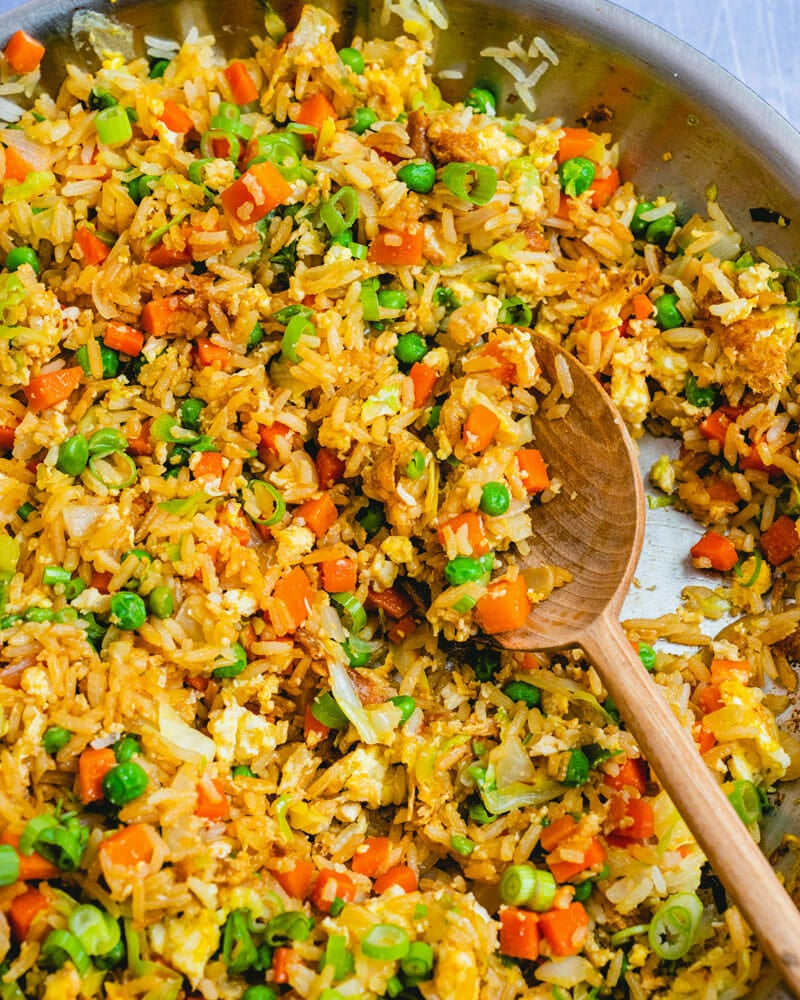

Fried Rice Recipes

Description
Fried rice are one of my favorite dishes to eat, fairly simple to make and is very tasty
Recipes
- Cooked Rice
- oil/butter
- vegatables
- chicke/pork
- Troasted Sesame Seed Oil
- Oyster Sauce
- Fish Sauce
- Salt
- (reccomends) Fried Eggs
Steps
- Heat the pan on high
- add butter/oil on pan
- Cut vegetables
- Cut meat
- Mix fish and oyseter sauce on a bowl
- Add the meat to the pan
- Remove from pan when cooked and place on plate
- Add the egg and place on plate when done
- Add the vegetabel to the pan and don't remove from the pan
- Add rice to pan
- Add the mix fish and oyster sauce to the pan
- Once it starts steaming add the rest of the ingredeints on the plate